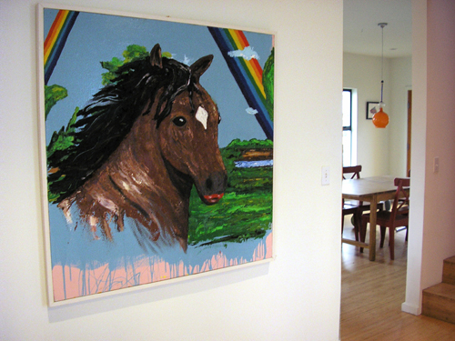
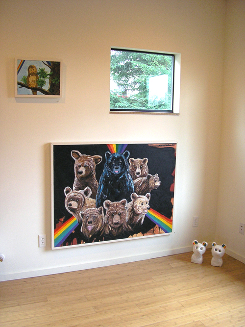
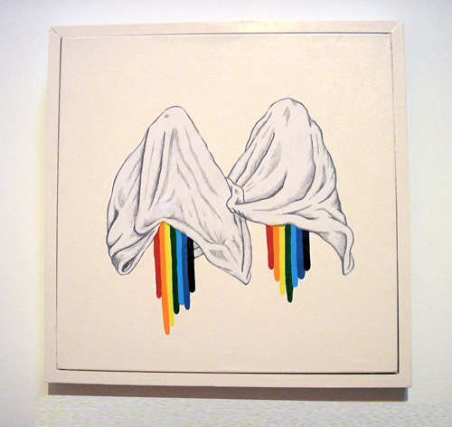
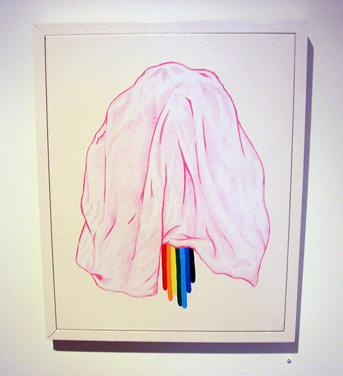
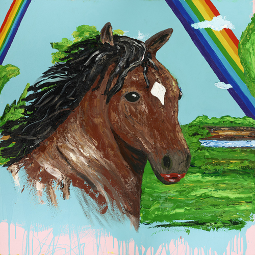
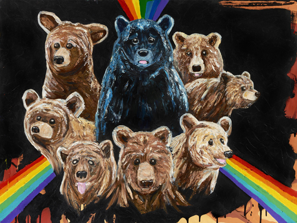
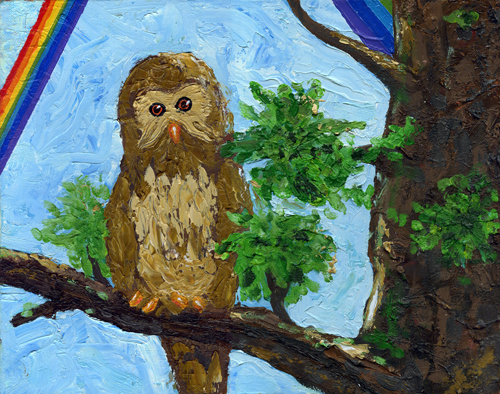
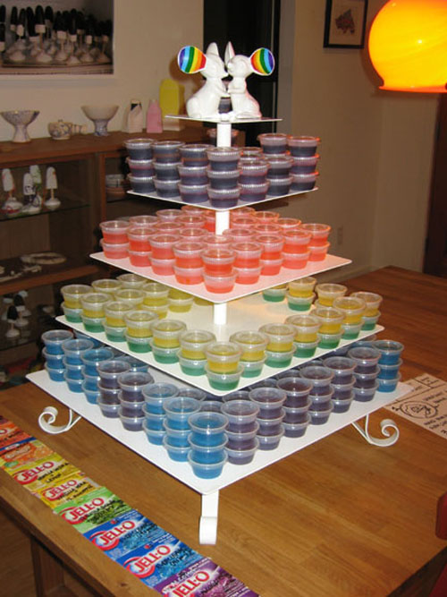

The Rainbow Connection
by Joey Veltkamp
February 4 - 18, 2011








The Rainbow Connection
an exhibition of new paintings by Joey Veltkamp
February 4 -18, 2011
Opening: Saturday February 4th, 6 - 9 pm
"In the past Veltkamp has used the symbolic language of animals as a way to bridge the gap of the uncommunicable or unspeakable. Animals are often used to indicate aggressively protective spirits, totems, or mystical incarnations of the artist's identity and selfhood. Bears, owls, horses, deer, foxes, etc, can be symbols of self-sufficiency, invulnerability to human interference, and regeneration. Anthropomorphizing animals like this and imbuing them with mystical characteristics in an unapologetically nostalgic way risks coming off kitschy or didactic, but in the case of Veltkamp's work - and especially apparent in his oil paintings - nostalgia for a state of animal innocence and incorruptibility only reinforces the reality of a cruel, dystopian world. Naivety doesn't factor into any of the work. Rather, coupled with the fantasy of the animal kingdom is the recognition of vulnerability in the wilderness, violence, and the threat of abandonment. It can sometimes be read as downright melancholy, but in Veltkamp's practice melancholy and joy are intertwined. The dystopian always carries with it the possibility of transfiguration: sadness is a void from which an excess of hope and unrestrained desire erupts."
As a special treat Joey will be serving Rainbow Jell-O shots along with screening of
Twin Peaks: Fire Walk with Me by David Lynch.